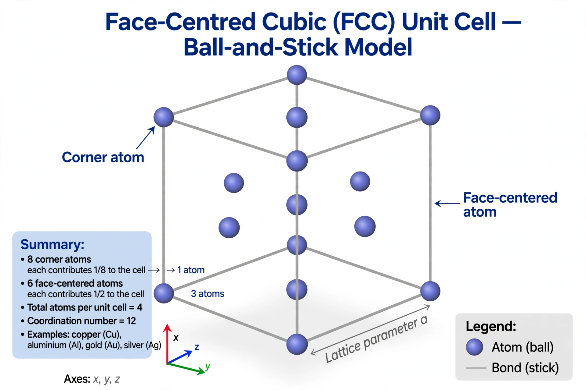

In crystallography, crystal structure is a description of the ordered arrangement of atoms, ions, or molecules in a crystalline material. The structure is defined by the geometry of the unit cell — the smallest repeating unit — together with the positions of the particles within it. Periodic repetition of the unit cell generates the crystal lattice, whose symmetry is classified into 7 crystal systems, 14 Bravais lattices, and 230 space groups.
Crystal structures are determined principally by diffraction: X-rays scattered by a crystal produce patterns whose intensities encode atomic positions. The field began with Laue's 1912 discovery of X-ray diffraction and the Braggs' solution of the first structures (such as rock salt and diamond) in 1913. Analysis uses the Laue equations (or Bragg's law) for spot positions — visualized with the Ewald sphere — and Fourier methods for intensities. Electron and neutron diffraction serve similar purposes.
Real crystals contain defects — vacancies, interstitials, dislocations, and grain boundaries — that strongly influence mechanical, electrical, and optical properties. Departures from perfect periodicity (quasicrystals, incommensurate structures) extend the classical picture.
Categories: Crystallography | Condensed matter physics